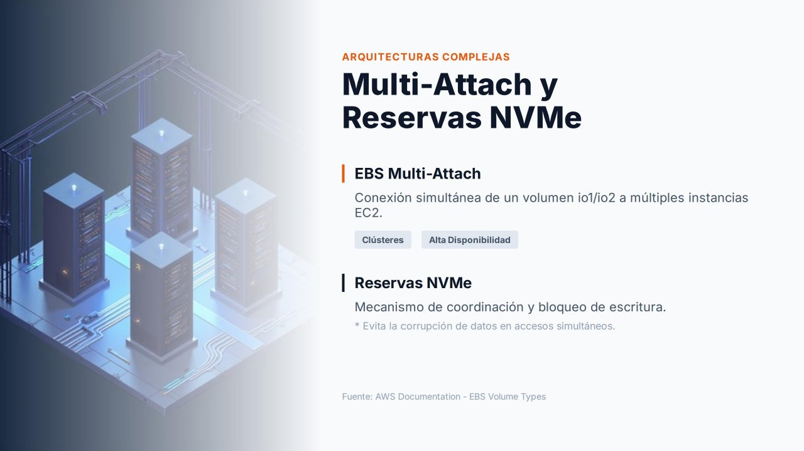

Multi-Attach y reservas NVMe¶

Contenido de ampliación
Esta página es opcional. Desarrolla contenidos que en el núcleo de la unidad solo se mencionan. No es necesaria para realizar las prácticas.
En condiciones normales, un volumen EBS se conecta a una única instancia EC2. Este modelo simplifica la gestión y evita los problemas derivados del acceso concurrente a los datos. Sin embargo, existen escenarios empresariales en los que varios servidores necesitan acceder simultáneamente al mismo almacenamiento en bloques. Para ellos, AWS ofrece EBS Multi-Attach y, como mecanismo de coordinación, las reservas NVMe.
EBS Multi-Attach¶
Multi-Attach permite adjuntar un mismo volumen a varias instancias a la vez. Cada instancia tiene permisos completos de lectura y escritura sobre el volumen compartido.
Requisitos y limitaciones¶
| Aspecto | Detalle |
|---|---|
| Tipos de volumen | Solo io1 e io2 (IOPS aprovisionadas) |
| Ubicación | Todas las instancias en la misma zona de disponibilidad que el volumen |
| Número de instancias | Hasta 16 instancias basadas en Nitro |
| Volumen de arranque | No puede utilizarse como volumen raíz |
| Activación | Al crear el volumen (--multi-attach-enabled) o posteriormente con el volumen desadjuntado |
| Métricas | Algunas métricas de CloudWatch no están disponibles para volúmenes Multi-Attach |
Casos de uso¶
Multi-Attach se encuentra en arquitecturas en las que dos o más servidores colaboran para prestar un mismo servicio:
- Clústeres de alta disponibilidad: si uno de los nodos falla, los demás siguen accediendo a los mismos datos sin migraciones ni cambios de almacenamiento.
- Clústeres de conmutación por error de Windows Server (WSFC) y bases de datos en clúster.
- Aplicaciones distribuidas que gestionan por sí mismas la coherencia de las escrituras.
El problema del acceso concurrente¶
Compartir un volumen entre varias instancias introduce un problema evidente: si dos servidores escriben al mismo tiempo sobre los mismos bloques, se producen inconsistencias o incluso la corrupción de la información.
Multi-Attach no convierte EBS en un sistema de ficheros compartido
El volumen sigue siendo un dispositivo de bloques. Los sistemas de ficheros habituales, como xfs o ext4, suponen que solo un sistema operativo escribe en el disco: cada instancia mantiene su propia caché y sus propios metadatos, y dos instancias montando el mismo xfs en lectura/escritura corromperán el sistema de ficheros.
Para compartir un volumen Multi-Attach hace falta un sistema de ficheros de clúster (como GFS2 u OCFS2) o una aplicación que coordine el acceso. Si lo que se necesita es simplemente que varios servidores compartan ficheros, la solución adecuada es Amazon EFS.
Reservas NVMe¶
Las reservas NVMe (NVMe reservations) son el mecanismo estándar del protocolo NVMe para coordinar y bloquear el acceso a un dispositivo compartido. Permiten que el software de clúster decida qué instancia puede escribir en el volumen en cada momento y excluir a un nodo que ha dejado de responder (fencing), evitando que siga escribiendo y corrompa los datos.
Funcionan de forma similar a los bloqueos de las bases de datos o de los sistemas de ficheros distribuidos: garantizan que las operaciones concurrentes se realicen de forma ordenada y segura.
| Aspecto | Detalle |
|---|---|
| Volúmenes | io2 con Multi-Attach habilitado |
| Quién las utiliza | El software de clúster: Windows Server Failover Clustering, Pacemaker, Oracle RAC, etc. |
| Función | Registrar los nodos, reservar el acceso de escritura, liberar o retirar la reserva de un nodo caído |
Es importante entender que la coordinación de los accesos sigue siendo responsabilidad del sistema operativo, del software de clúster o de la aplicación. AWS proporciona el mecanismo, pero no lo utiliza por sí mismo.
Resumen¶
| Funcionalidad | Qué aporta |
|---|---|
| Multi-Attach | Compartir un volumen de bloques entre varias instancias de la misma AZ |
| Reservas NVMe | El mecanismo de bloqueo que evita conflictos y mantiene la integridad de los datos |
| Amazon EFS | La alternativa cuando lo que se necesita es compartir ficheros, incluso entre varias AZ |
Referencias¶
- AWS. Attach a volume to multiple instances with Amazon EBS Multi-Attach — Multi-Attach
- AWS. NVMe reservations — Reservas NVMe
- AWS Storage Blog. Clustered storage simplified: GFS2 on Amazon EBS Multi-Attach enabled volumes — Artículo